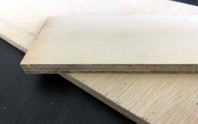
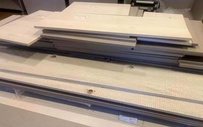
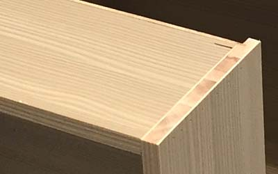
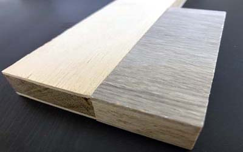
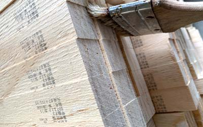
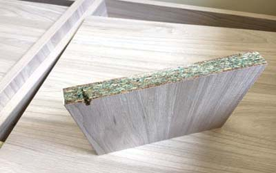
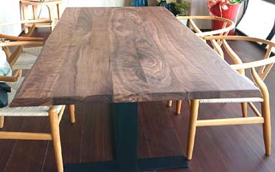

為何選擇我們
世屋國際累積多年環境治理與除甲醛現場經驗。我們會依污染來源、材料、空間條件與檢測結果規劃處理方式，而不是只依靠單一藥劑或單一步驟。
甲醛治理關係到長期室內空氣品質。建議先建立正確觀念、確認檢測條件與處理方法，再評估適合的治理方案，避免受到誇大效果的廣告影響。

嚴格來說，並沒有所謂零甲醛板材（無甲醛木建材）。木材本身仍可能有極低的天然背景值；判斷是否安全，應以實際室內檢測結果與現行法規標準為準。
原木經貼皮、防水、強化、防蟲、黏著或其他加工後，材料組成與逸散情況會改變。甲醛也可能存在於自然環境與部分食物中，重點不是追求「完全不存在」，而是確認室內濃度維持在安全範圍。

檢測報告必須連同測試方法、採樣條件、試體處理方式、檢測單位及適用標準一起閱讀。單一送測樣品在特定條件下的結果，不一定等同實際裝潢完成後的室內空氣品質。
例如板材表面封閉處理、試體切面是否外露、溫度、濕度與換氣條件，都可能影響量測結果。選購時應確認報告內容與實際使用材料一致，裝潢完成後再進行室內空氣檢測。

一般所稱「無毒」並不代表完全沒有任何物質，而是有害物質含量或逸散量受到控制，在正確使用條件下符合相關安全標準。
原木也可能因防水、防蟲、染色、塗裝或黏著加工而改變材料特性。夾板、集成材及碎木壓製板材則需同時考量膠合與表面處理。
選擇板材時，應確認產品標示、檢測報告與綠建材等相關證明；裝潢完成後，仍應以室內空氣中的實際甲醛濃度判斷。

市場上的 F1、F2、F3、E1、E2 等板材分級，會因國家、地區及檢測方法不同而有差異。選購時除了查看分級，也要確認採用的標準、檢測方法及報告是否對應實際產品。
即使使用低逸散板材，若單位空間內使用面積很大，室內累積濃度仍可能升高。是否超標與材料逸散量、用量、溫濕度及通風情況都有關係。

角料常用於天花板樑架與造型支撐。由於材料位於天花板內部，完工後不易查看，因此施工前應確認材質、分級與使用數量，並保留產品資料。
角料可能因加工、含水率或存放方式而產生些微變形，通常可透過合適工法處理。甲醛風險則應綜合板材等級、使用量、空間大小與通風條件評估。

顆粒板通常由木質顆粒加入黏著劑後壓製；纖維板則將木材解纖後再成型。不同產品在密度、防潮、耐熱與甲醛逸散表現上可能有很大差異。
選用時應依實際空間的濕度、溫度與用途，確認板材規格、封邊品質及檢測證明，不能只以單一名稱判斷安全性。

原木裁切後可能進行拋光、染色、防水或透明塗裝等處理。選購時除了辨識木種與含水率，也要了解表面塗料、防蟲處理及後續維護方式。
世屋國際累積多年環境治理與除甲醛現場經驗。我們會依污染來源、材料、空間條件與檢測結果規劃處理方式，而不是只依靠單一藥劑或單一步驟。
甲醛治理關係到長期室內空氣品質。建議先建立正確觀念、確認檢測條件與處理方法，再評估適合的治理方案，避免受到誇大效果的廣告影響。